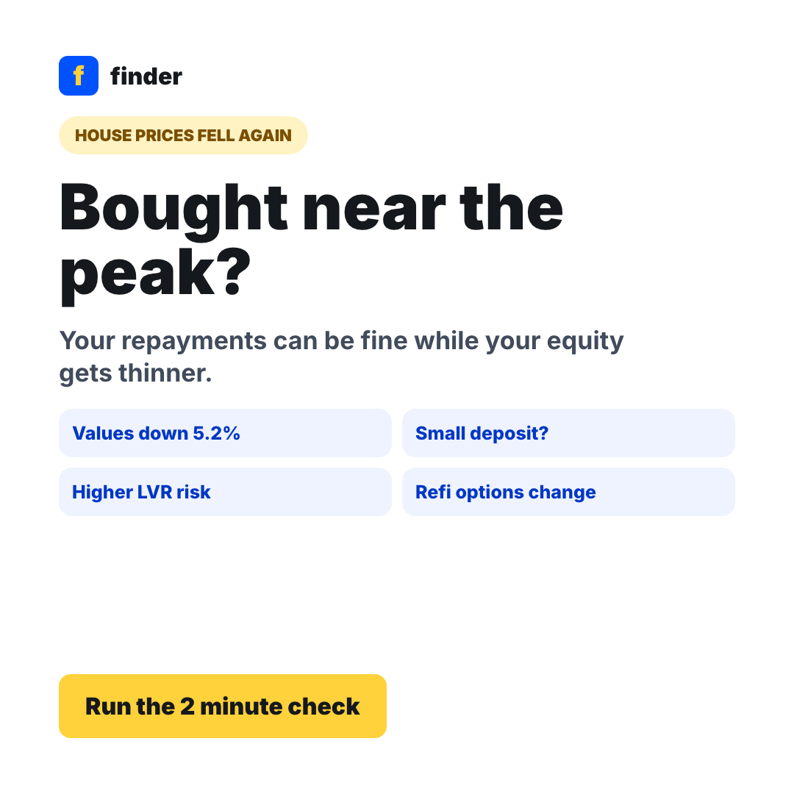

What did you pay?
Start with your contract price and deposit size, not the lender's original valuation.
Housing values are down from the peak
National values are reported 5.2% below the March peak. If you bought near the top with a small deposit, your loan-to-value ratio may have shifted without you missing a repayment.
Work through these three figures to see where your equity sits today, then give your loan a health check before your rate is next reviewed.
Start with your contract price and deposit size, not the lender's original valuation.
Use a suburb-level estimate, then stress test it against the reported 5.2% national fall.
See whether you have moved above 80%, above 90%, or into thin-equity territory.
This check gives you an estimate only. It is general information, not personal advice, and it does not take your objectives, financial situation or needs into account. Your lender's valuation and lending criteria decide your actual position.
Three situations where it is worth running the check, even if your repayments are perfectly on track.
